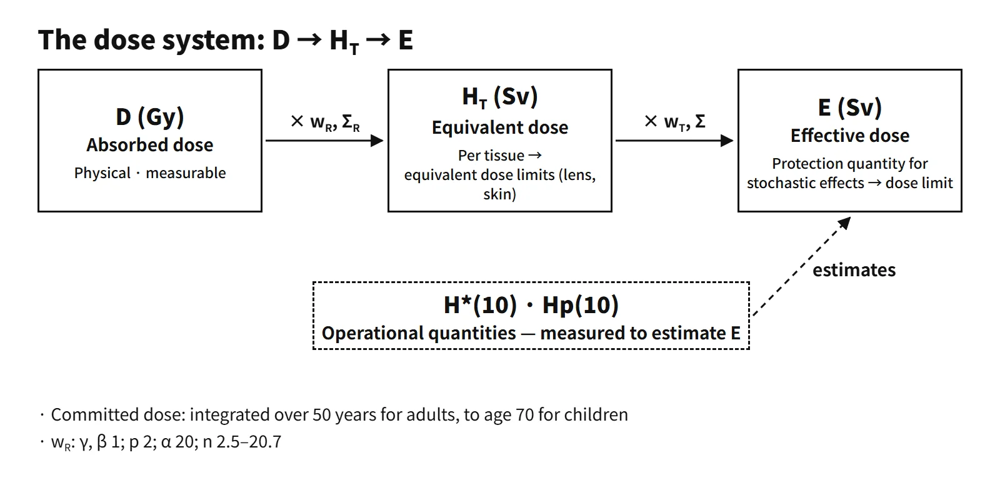

Radiation Protection & Emergency · C-RP-002
Equivalent Dose and Effective Dose — Protection Quantities Built by Multiplying Absorbed Dose by wR and wT
Absorbed dose weighted once for radiation type and once for tissue sensitivity, with the neutron wR curve, tissue weights and a worked example.
Equivalent dose HT is the mean absorbed dose in a tissue or organ T multiplied by the radiation weighting factor wR and summed over radiation types (HT = ΣR wR·DT,R). Effective dose E is the equivalent dose of each tissue multiplied by the tissue weighting factor wT and summed over all tissues (E = ΣT wT·HT, ΣwT = 1). Both are in Sv (= J/kg).
These are protection quantities for stochastic effects (cancer and heritable effects), weighted for radiation type (wR) and tissue sensitivity (wT), which cannot be measured inside the body and are estimated with the operational quantities H*(10) and Hp(10).
Principle and mechanism
Why start from absorbed dose
The physical basis of the dose system is absorbed dose D (Gy = J/kg). It is defined for every radiation and every material and can be measured. Exposure X (C/kg), by contrast, is the charge produced by photons in air, so it applies only to photons and air (1 R = 2.58×10⁻⁴ C/kg).
Even at the same 1 mGy, alpha particles are more efficient at causing cancer than gamma rays, and even at the same equivalent dose, tissues contribute differently to the risk. So the ICRP weights the mean tissue absorbed dose DT,R twice: for radiation type and energy (wR) and for tissue sensitivity (wT).
Radiation weighting factor wR
| Radiation | ICRP 60 (1990) | ICRP 103 (2007) |
|---|---|---|
| Photons, electrons, muons | 1 | 1 |
| Protons | 5 (above 2 MeV) | 2 (including charged pions) |
| Alpha particles, fission fragments, heavy ions | 20 | 20 |
| Neutrons | Step function 5, 10, 20, 10, 5 (boundaries 0.01, 0.1, 2, 20 MeV) | Continuous function of energy |
The ICRP 103 neutron wR is 2.5 + 18.2·exp[−(ln En)²/6] below 1 MeV, 5.0 + 17.0·exp[−(ln 2En)²/6] from 1 to 50 MeV, and 2.5 + 3.25·exp[−(ln 0.04En)²/6] above 50 MeV (En in MeV). The maximum is 20.7 at about 1 MeV, and in the thermal region it is 2.5, half the ICRP 60 value (5). The change reflects the fact that for low-energy neutrons secondary photons from hydrogen capture (n,γ) in the body make up a large share of the dose, lowering the average effect, and it removes the discontinuities of the step function.
![Graph of the neutron radiation weighting factor against neutron energy from 10⁻⁸ to 10³ MeV on a log scale: the ICRP 60 step function at 5, 10, 20, 10 and 5 with boundaries at 0.01, 0.1, 2 and 20 MeV, and the ICRP 103 continuous curve rising from 2.5 at thermal energies to a maximum of about 20.7 near 1 MeV, 8.8 at 10 MeV, then falling; the equation HT equals the sum of wR times DT,R; a photo of a neutron survey meter measuring H*(10); and a table of wR for photons and electrons (1, 1), protons (5, 2) and alpha particles, fission fragments and heavy ions (20, 20)](../../assets/images/concepts/c-rp-002-equivalent-effective-dose/fig1-neutron-wr-curve.webp)
Tissue weighting factor wT and effective dose
| Tissue | ICRP 60 | ICRP 103 |
|---|---|---|
| Red bone marrow, colon, lung, stomach | 0.12 each | 0.12 each |
| Breast | 0.05 | 0.12 |
| Gonads | 0.20 | 0.08 |
| Bladder, liver, esophagus, thyroid | 0.05 each | 0.04 each |
| Bone surface, skin | 0.01 each | 0.01 each |
| Brain, salivary glands | Included in remainder | 0.01 each |
| Remainder tissues | 0.05 | 0.12 (13 tissues + 1 sex-specific) |
wT is each tissue's relative contribution to the radiation detriment, which weights fatal cancer, non-fatal cancer, life shortening and heritable effects. The ICRP 103 detriment-adjusted nominal risk coefficients are 5.7 %/Sv for the whole population and 4.2 %/Sv for adult workers (ICRP 60: 7.3 %/Sv and 5.6 %/Sv). The lower re-evaluation of heritable risk is why gonads went from 0.20 to 0.08. ICRP 103 computes E by averaging the equivalent doses of the male and female reference phantoms, so E is the value for a reference person, not for a real individual.
Worked example (teaching assumptions, adult worker, one year, contributions from tissues other than those shown ignored)
- External gamma, uniform whole-body absorbed dose 1.0 mGy → every tissue HT = 1 × 1.0 = 1.0 mSv → since ΣwT = 1, E₁ = 1.00 mSv
- Inhalation of an alpha-emitting aerosol, committed absorbed dose to the lung Dlung(50) = 0.10 mGy → Hlung = 20 × 0.10 = 2.0 mSv → E₂ = 0.12 × 2.0 = 0.24 mSv
- Inhalation of I-131, committed equivalent dose to the thyroid Hthyroid(50) = 10 mSv → E₃ = 0.04 × 10 = 0.40 mSv (with ICRP 60 weights 0.05 × 10 = 0.50 mSv)
- Total E = 1.64 mSv = external exposure in that year + the 50-year committed contribution of that year's intakes. 1.74 mSv is the comparison value with the same tissue doses but ICRP 60 weights.
In a partial-body exposure E is much smaller than HT: a thyroid dose of 10 mSv is only 0.4 mSv as E. That is why tissues where tissue reactions matter, such as the lens of the eye and the skin, have separate equivalent dose limits.
![Flow from absorbed dose DT,R in Gy, multiplied by wR and summed, to equivalent dose HT in Sv, multiplied by wT and summed, to effective dose E in Sv; a reference-person figure with the thyroid and lung marked; stacked bars of tissue weighting factors for ICRP 60 (gonads 0.20, marrow, colon, lung, stomach 0.48, breast 0.05, bladder, liver, esophagus, thyroid 0.20, bone and skin 0.02, remainder 0.05) and ICRP 103 (0.08, 0.48, 0.12, 0.16, 0.04, 0.12); and a worked example adding 1.00, 0.24 and 0.40 mSv to E = 1.64 mSv (1.74 mSv with ICRP 60 weights)](../../assets/images/concepts/c-rp-002-equivalent-effective-dose/fig2-dose-chain-tissue-weights.webp)
Committed dose and collective dose
- Committed dose: the dose rate integrated after an intake. The integration period is 50 years for adults and to age 70 for intake by children (ICRP 103). It is written as committed equivalent dose HT(50) and committed effective dose E(50), and all of the future dose is recorded in the year of intake.
- Collective effective dose (S = Σ E·N, in man·Sv): ICRP 103 states explicitly that it should not be used to calculate numbers of cancer deaths by multiplying tiny doses by large populations. At nuclear plants, the collective dose per unit during a refueling outage is the typical indicator.
What it means in a plant
- Linking measurement and assessment: E and HT are quantities inside the body and cannot be measured. In the field, the ICRU operational quantities are measured: ambient dose equivalent H*(10) and directional dose equivalent H′(0.07, Ω) for area monitoring, and personal dose equivalent Hp(10), Hp(0.07) and Hp(3) for individual monitoring. Because they generally approximate E conservatively for common photon exposures, Hp(10) is recorded as the estimate of E, though it is not guaranteed to be at least E under all conditions (ICRP 116). In non-uniform fields such as a steam generator channel head, a two-dosimeter algorithm weights and sums two readings.
- Exposure dose = external + internal: dose limits apply to the sum of the dose from external exposure and the dose from internal exposure. So an individual's exposure dose is the effective dose from external exposure based on Hp(10) plus the committed effective dose E(50) from internal exposure. Internal exposure is obtained from whole-body counter (WBC) measurements and intake assessment.
- Managing neutron exposure: for containment entries at power or work in a heavy-water reactor building, the neutron contribution is assessed separately; rem counters (moderating spheres) are designed to follow the fluence-to-H*(10) conversion coefficients, so that basis affects the assessed value.
- Design and off-site assessment: shielding design dose rates and off-site dose assessments at the site boundary also express results as effective dose. Values differ depending on the recommendations behind the dose conversion factors (ICRP 26/30, 60, 103).
Regulatory and design criteria
The references below are international and US examples.
- ICRP 26 (1977) → 60 (1990) → 103 (2007): dose equivalent and effective dose equivalent HE, based on the quality factor Q, became equivalent dose and effective dose, based on wR, in ICRP 60; ICRP 103 revised the weighting factors and introduced sex averaging and new reference phantoms (ICRP 110). ICRP 103 sets the occupational effective dose limit at 20 mSv per year averaged over 5 years (no more than 50 mSv in any year) and the public limit at 1 mSv per year. The lens limit was lowered by ICRP 118 (2012) to 20 mSv averaged over 5 years (no more than 50 mSv in any year), and IAEA GSR Part 3 (2014) adopted it.
- US 10 CFR 20: TEDE 50 mSv (5 rem) per year and lens 150 mSv, keeping the ICRP 26/30 system (quality factor; gonad wT 0.25). The NRC stopped its rulemaking to adopt ICRP 103 in 2016.
Easily confused pairs
| Equivalent dose HT | Effective dose E | Dose equivalent H (operational) | |
|---|---|---|---|
| Applies to | One tissue or organ | Whole body (reference person) | A point (ICRU sphere or depth d in the body) |
| Weighting | wR | wR and wT | Quality factor Q(L) |
| Use | Limits to prevent tissue reactions (lens, skin) | Limits and optimization for stochastic effects | Measurement and demonstration |
| Measurable | No | No | Yes (H*(10), Hp(10)) |
| Absorbed dose D | Effective dose E | |
|---|---|---|
| Nature | Physical quantity | Protection quantity |
| Unit | Gy | Sv |
Effective dose is not a quantity to use directly for calculating an individual's cancer risk. Individual risk assessment and epidemiology use organ absorbed doses and individual characteristics (ICRP 147, 2021).
Key points at a glance
- Absorbed dose D: energy absorbed per unit mass, Gy (J/kg), a physical quantity.
- Equivalent dose HT = ΣR wR·DT,R, unit Sv — mean tissue absorbed dose weighted for radiation type.
- wR (ICRP 103): photons and electrons 1, protons 2, alpha 20, neutrons a continuous function from 2.5 to 20.7 (maximum at 1 MeV).
- Effective dose E = Σ wT·HT, ΣwT = 1, unit Sv — stochastic risk converted to a uniform whole-body exposure basis.
- wT (ICRP 103): marrow, colon, lung, stomach, breast, remainder 0.12; gonads 0.08; bladder, liver, esophagus, thyroid 0.04; bone surface, skin, brain, salivary glands 0.01.
- Nature: a sex-averaged protection quantity for a reference person; not measurable → estimated with the operational quantities H*(10) and Hp(10) (generally conservative).
- Committed dose: integrated over 50 years (children to age 70) after intake and recorded in the year of intake / collective dose: Σ E·N, man·Sv.
- Limits (ICRP 103, IAEA GSR Part 3): workers 20 mSv per year averaged over 5 years (no more than 50 mSv in any year); public 1 mSv per year; lens 20 mSv per year averaged over 5 years (ICRP 118).
- Which weighting set: some regulations still use older weighting factors (ICRP 60, or ICRP 26/30 in US 10 CFR 20), so state which set is used; an individual's exposure dose is external dose plus committed internal dose.
- Limits of use: not for deterministic effects or individual risk assessment (use Gy).
